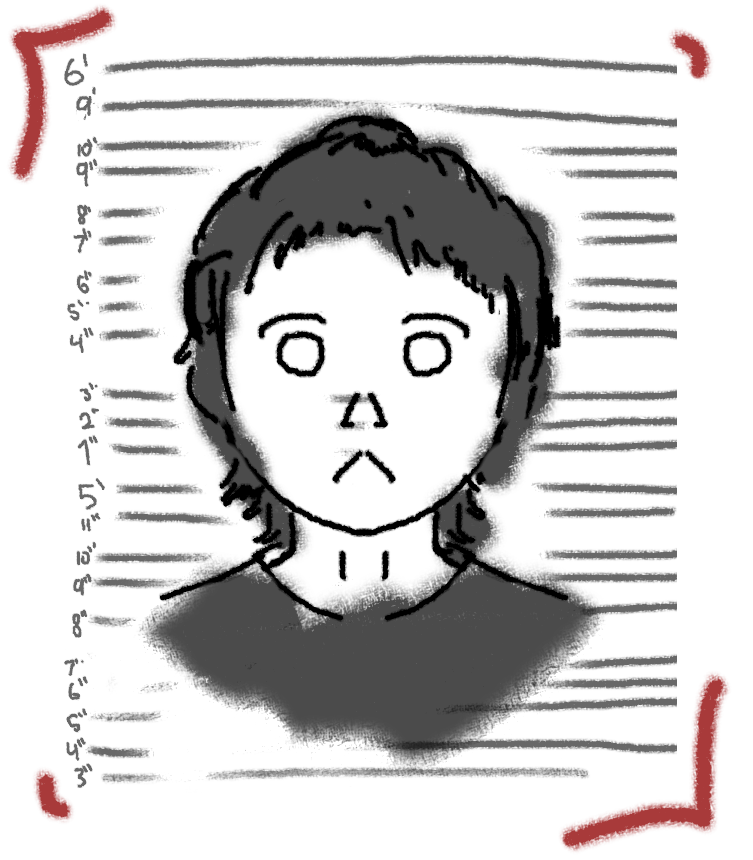

about me

Am I the best artist you've ever seen? Am I famous? Both no. But name another person who drew a cow shooting a laser from its stomach. My name is "Kiwi" and I've been doing art as a hobby starting from the age of 12. Many people have started earlier than me, and may be called more talented, but even if so, I have a lot of fun not being talented - and that is what I hope to showcase. I draw with anything, on anything: Napkins and envelopes; Sweat on a restaurant table. I made a cliffside sunset with chewed up crayons on a cardboard disk that I found stuck to the bottom of a candle. But of course, I'll take the time to make something good on paper. I don't care much if something I make is good, I care if it's fun to me, and I will find a way to throw passion into any piece somehow. Some people may not like it, but I believe that's what art should be. Come check out what I've made! (Click on the navigation icon in the top left corner).